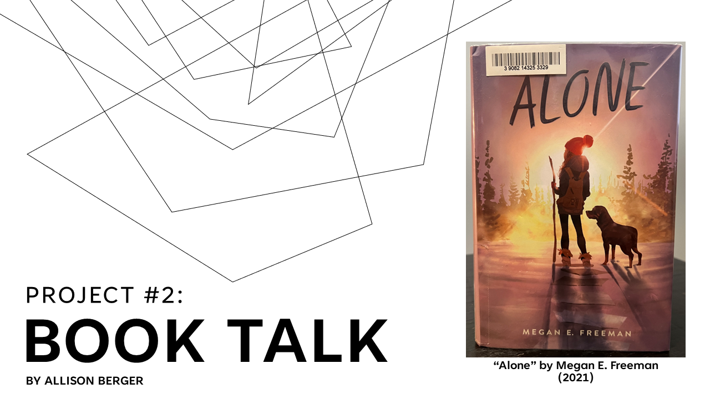
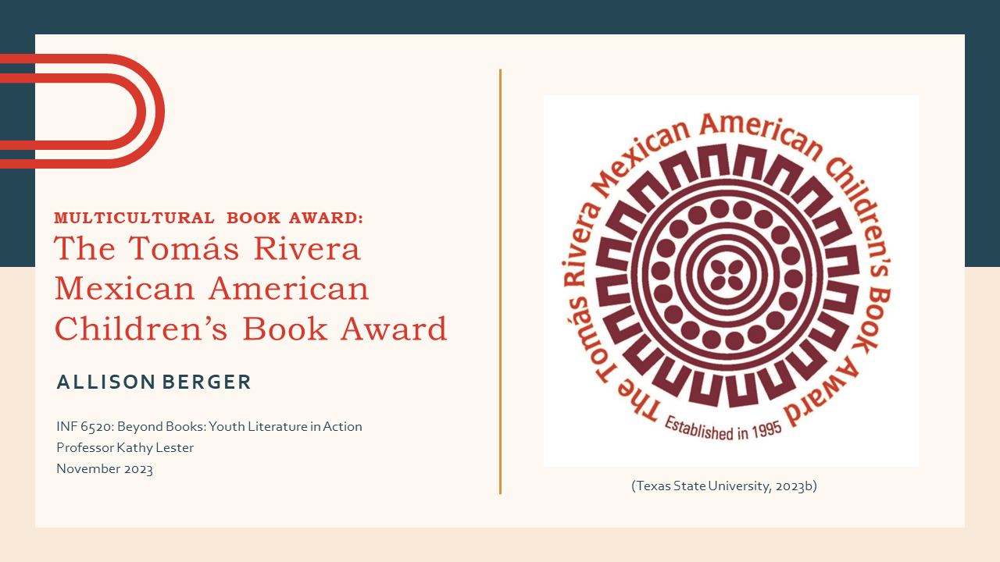

Allison Berger
Allison Berger began in the MLIS program at Wayne State in Fall 2022. During her time in the program, she has been working on earning her MLIS degree, along with a Graduate Certificate in Public Library Services to Children and Young Adults. She plans to graduate in December 2024.Read More
Essays
Nov 2022 |
Information Profession Principles and Their InfluenceIn this essay, I analyzed three of the principles held by different professional associations in the information profession and discussed my thoughts about my personal direction in the information profession, in order to answer the question: Why do the three principles or beliefs I selected have such a powerful influence on my personal beliefs? |
Apr 2023 |
Types of Reference Services in a Public LibraryThis essay is is an integrated report about several of my observations at a suburban public library. It focuses on the different types of reference services available in public libraries. There is a special concentration on three types of reference services: readers’ advisory, ready reference, and literacy programs, given their frequent occurrence during my observation period. |
July 2023 |
The Relationship Between Social Media Presence and Library Usage in Public LibrariesIn recent years, many public libraries have begun using social media as a marketing tool as a way to increase library usage. To prove this action is valid, the purpose of this study is to determine the relationships between a public library’s social media presence and its in-person event attendance and book circulation. |
Presentations
|  | Book Talk - "Alone" by Megan E. FreemanThis presentation is a book talk about the novel-in-verse Alone by Megan E. Freeman. |
|  | Multicultural Book Award AssignmentThis presentation provides viewers with information about the Tomás Rivera Mexican American Children's Book Award. It also includes three book talks on books that have won the award in the past. |